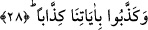
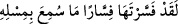

onların ilmi kuvvetlerinin bozuk olduğunu bildirmektedir. Buna göre âyet-i kerîmeye
mânâ vermek gerekirse; “onlar âhireti inkâr ederler ve bir gün hesaba çekilmekten
korkmazlardı” denebilir. Ahireti inkâr ettikleri ve hesaba çekilmekten korkmadıkları
için her türlü çirkin fiilleri yaparlardı ve hiçbir itâatten hoşlanmazlardı.
Âyetteki “ummak” anlamındaki “recâ” fiili “korkmak” şeklinde tefsir edilmiştir.
Ummak fiilinin korkmak şeklinde tefsir edilmesi sebepsiz değildir. Şöyle ki hesaba
çekilmek bir insan için en zor iştir. Zor olan bir şey için de “ummak” değil, aksine
“korkmak ve huşu duymak” fiili kullanılır.
28. Bizim âyetlerimizi yalanladıkça yalanlamışlardı.
Onlar bu gerçekleri dile getiren “bizim âyetlerimizi yalanladıkça yalanlamışlardı.”
Bu, onların düşünce yapılarının ne kadar bozuk olduğunu ifâde eden bir cümledir. Bâzı
tefsirlerde bu son cümle şöyle tefsir edilmektedir: “Onlar bizim peygamberlerin
ellerinde ve dillerinde ortaya çıkan kavlî ve fiilî âyetlerimizi yalanladıkça
yalanlamışlardı.”
Âyetteki “kizzâben” kelimesi “aşırı yalanlamak” anlamınadır. Çünkü onlar küfürde ve
çeşitli mâsiyetleri işlemekte ısrarlı idiler. Böyle oldukları için onlar, cezâların en
korkuncu ile yaptıkları amellerine uygun bir şekilde cezâlandırıldılar. “Kizzâb”
kelimesinin geldiği “fiâl” kalıbının kullanımı Arapçayı çok düzgün konuşan
edebiyatçılar arasında yaygındır. Bu, kurala uygun sürekli bir kullanımdır. Tıpkı
“kelleme” fiilinde “killâmen” kalıbının kullanılması gibi.
Keşşaf müellifi Zemahşeri şöyle anlatır: Bâzıları beni bu âyeti tefsir ederken
gördüler. İçlerinden biri (kizzâb kalıbında bir kelime kullanarak) dedi ki: “/Sen bu âyeti çok güzel tefsir ettin, bunun bir benzeri daha
işitilmiş değildir.”
Bâzı âlimler şöyle bir açıklama yaparlar: Bâzı isimlerde şeddeli olan harflerden
birisi, o kelime şeddeli masdarla karışmasın diye ya harfine çevrilir. Sözgelimi
“dinnâr” kelimesi bu kurala uyularak “diynar” yapılmıştır Ömer b. Abdulaziz’in
kâtibine söylemiş olduğu bir ifâdede aynı şeyi görmekteyiz. O kâtibine şöyle der:
“Bismillah yazarken “bâ”yı uzat. Siynat’ı ortaya çıkar, mim’i yuvarlak yap.” Bu
cümledeki “siynat” aslında “sinnat” şeklinde idi. Bu kelimenin tekili ise “sin” değil
“sinn”dir. Sinn bilindiği üzere diş demektir. Ömer b. Abdulaziz’in ifâdesinde
kasdedilen işte bu sin harfinin dişleridir, yoksa harf olan sinler değildir. Zira bilindiği
üzere besmelede bir tek sin harfi vardır.
Bir başka açıdan şöyle demek de mümkündür. Burada diş anlamına gelen “sinn”,
“sin” harfi ile ifâde olunmuştur. Bundan amaç ise mubâlağa ifâde etmektir. Buna göre